2012世团赛掠影[34p]
#1 2012世团赛掠影[34p] 作者：有志青年 发表时间：2012-5-5 8:25:21
今天有幸观摩了世团赛决赛阶段第2轮的比赛，拍下了一些照片与众位分享。赛场外是一个大型购物广场，悬挂的多国国旗倒与这次国际比赛相得益彰。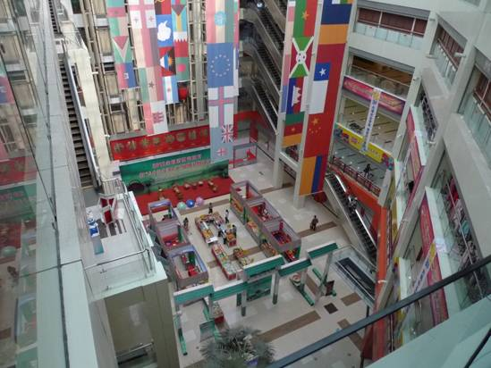
赛场外的走廊很有文化韵味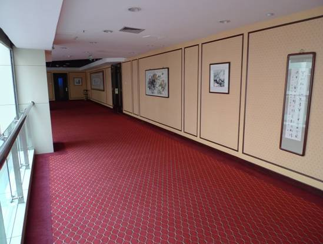
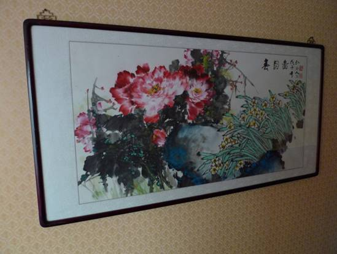
门口望去，赛场内井然有序，裁判和工作人员各司其职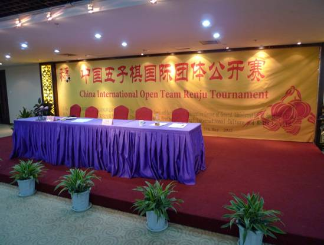
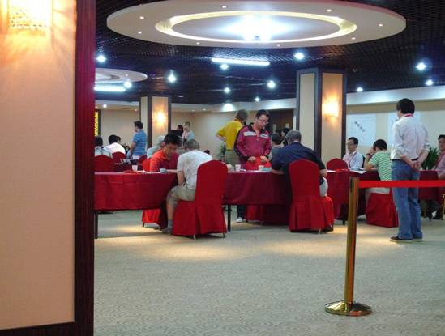
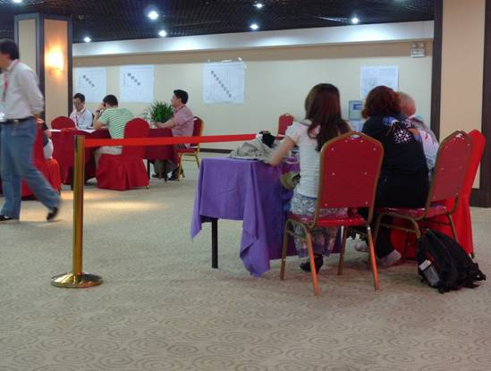
进入内场一探究竟。这个爱沙尼亚小子下棋干脆利落，初出茅庐却身手不凡，兴许会成为明日之星。你说爱沙尼亚人口不多，为啥总出五子棋的人才呢？他叫小马丁。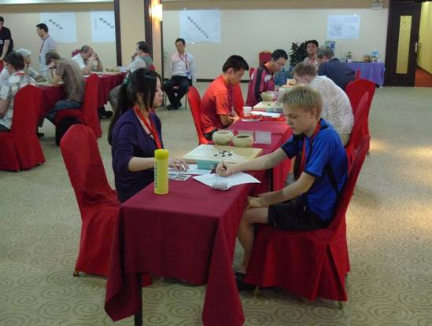
曹冬、白痴同学开赛没多久就满处溜达，看来对开局满意啊。再瞧朱大帅这表情——很萌
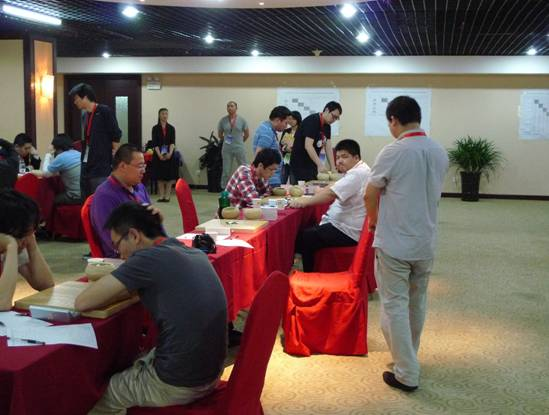
墙上粘贴着各阶段对局成绩表，一共三张，一目了然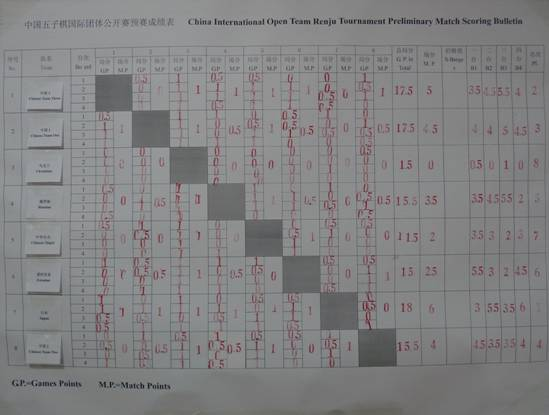
2队在与日本悍将们捉对激斗，气氛肃杀。亮点1：陈科翰老兄的T恤是上届世团的纪念衫？很好看。亮点2：看九指手里拿着的是什么？坑爹啊，他他他，他还有空喝啤酒？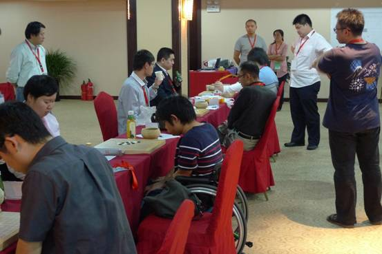
每个台次各少一个人，人呢？内战的压力总归要小一些
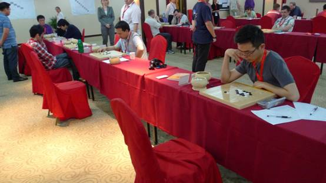
乐透区的比赛少了几分紧张，多了几分轻松。看，乌克兰大叔忙里偷闲，垒了个五子塔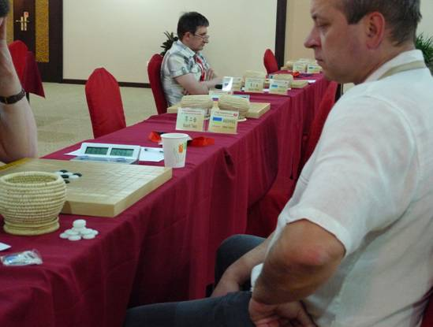
坦克交换了几步，飘然而去，留下陈科翰同学苦苦谋划对攻的走法。很久以前就认识坦克，那时他还是个孩子，今日终得见真人，别有一番感触。他俨然已成为一个出色的胜负师。落子、拍钟、记谱，不疾不徐，规范中透着自信。之后他还会轻轻拿一颗子放置在棋盘边，始终保持五颗的数量。这个小仪式是为了给自己讨个好彩头？本次比赛，坦克8轮不败，发挥上佳。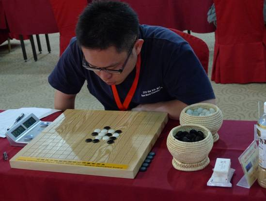
这是一盘激烈的对攻战，双方频频长考，不吝时间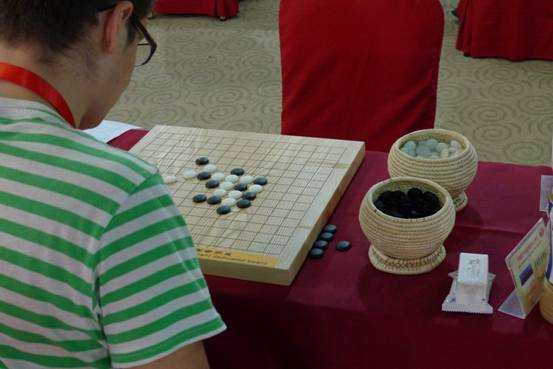
”快下快下，再不下老子揍你”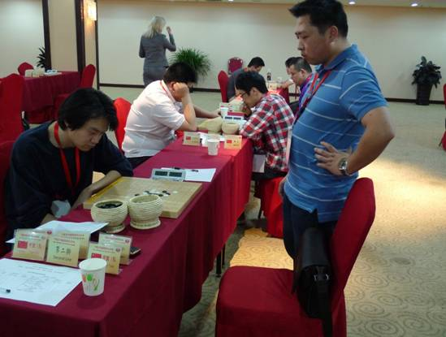
芦海天外飞仙的一手，这小白还能顶住么？真是头痛不已。但人家就是胸口碎大石，硬生生扛了下来。长用时的比赛真是波起云涌，各领风骚1小时。不到最后，很难说谁会活到终点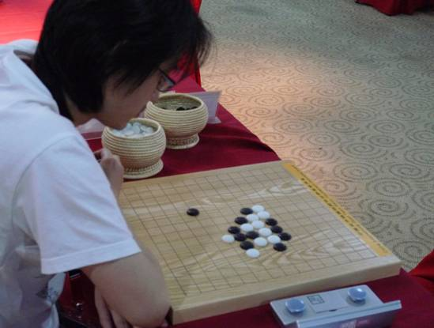
他们的故事是从疏星6手这个诡异的变招开始的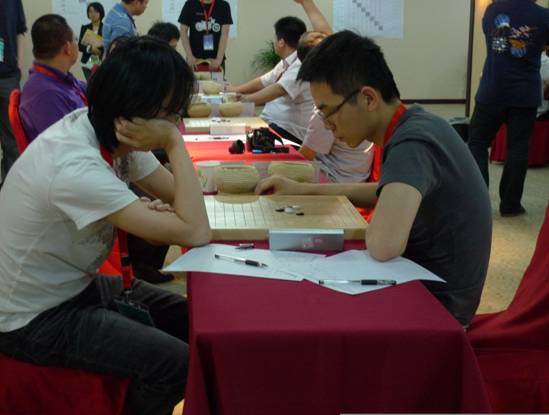
看，帅哥冈部是带着这个精致的麻袋来比赛的。里面装了很多很多装备，什么扇子啦、毛巾啦、水啦、小食品啦、笔记本啦、化妆品啦。。。。咋掏都掏不完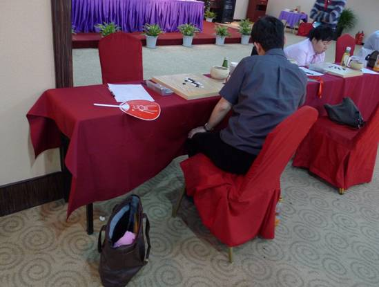
新科全锦赛冠军对中村大神——鸭梨山大啊
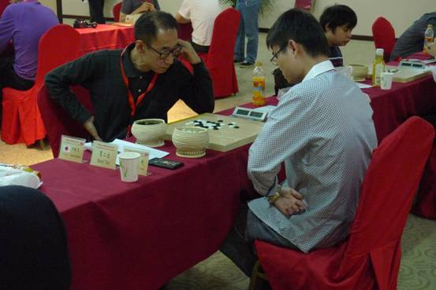
九指心情大好，大扇子摇的是虎虎生风，那动静跟直升机起飞似的，扑啦啦作响。形势不利，急的大角直挠头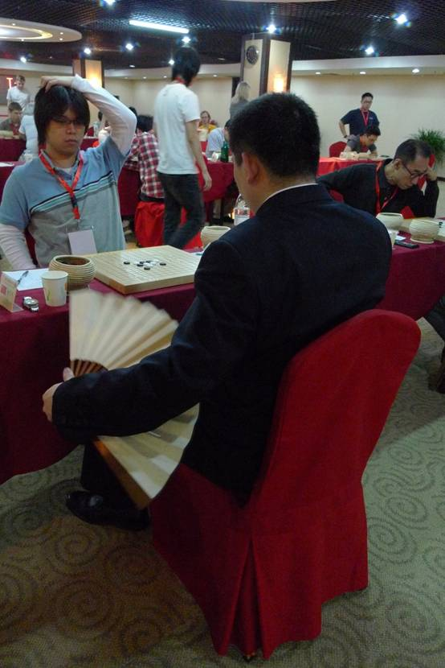
陈伟对冈部也陷入苦战。亮晶晶的的棋子上，都是手心里的汗水。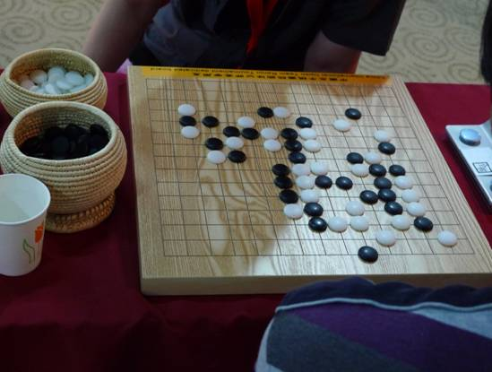
九指打响抗日反击战的头炮。硝烟散尽，只余下胜利者的名牌静静摆在棋桌之上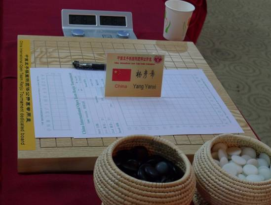
曹冬也胜了。场下问他，对陈科翰那盘咋会漏杀呢？他答，没时间了。原来如此。再问，这次比赛咋输了这么多？他说：你没发现输的几盘都是执黑么？有意想练练进攻。确实，他行棋风格上有慢慢变得大胆的趋势。记得去年世锦赛得冠归来，他说，以后我要多用用黑棋进攻了。之前10年学中村，之后的10年，学安度————衷心祝愿他也成为一棵棋坛常青树。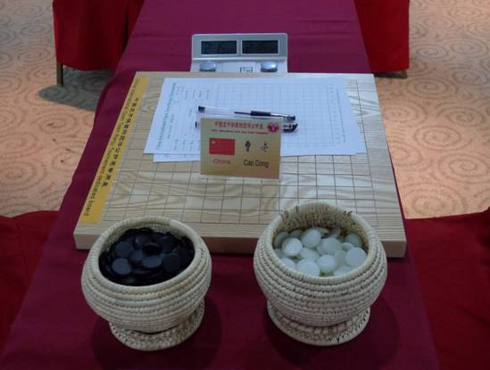
5——8名的比赛结束后，乌克兰人把俄罗斯人苏切请过来虚心求教，大家一起研究探讨变化，气氛融洽。世团赛不光要比拼棋技，更应成为各国五子棋爱好者交流沟通的平台。天下棋迷一家亲。对了，大家看的出他们摆的是什么开局的哪个变化吗？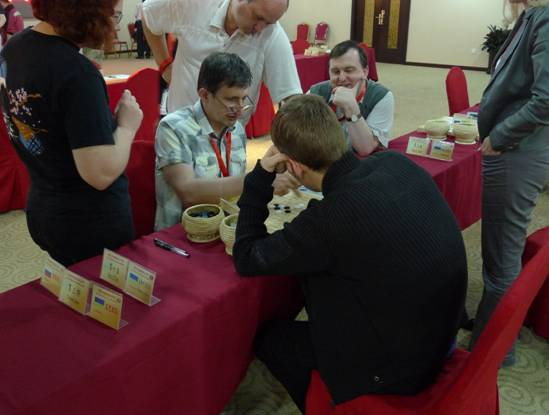
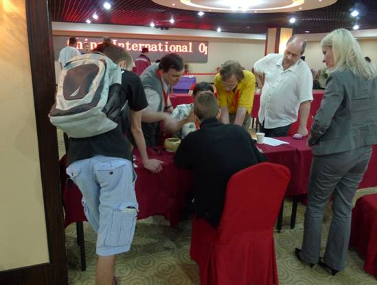
4个#2 Re:2012世团赛掠影[34p] 作者：失落刀 发表时间：2012-5-5 8:38:36
请土豆同学跟帖领取威望。
#3 Re:2012世团赛掠影[34p] 作者：小丸.net 发表时间：2012-5-5 9:14:07
这相机才叫相机嘛。。。。。。#4 Re:2012世团赛掠影[34p] 作者：梧桐风 发表时间：2012-5-5 9:29:05
求文章作者的真实姓名#5 Re:2012世团赛掠影[34p] 作者：小红眼镜 发表时间：2012-5-5 9:38:42
回楼上，李鹏。#6 Re:2012世团赛掠影[34p] 作者：茗弈妙手 发表时间：2012-5-5 9:40:13
回4楼，他的真实姓名在百度是敏感字。#7 Re:2012世团赛掠影[34p] 作者：臭棋居士 发表时间：2012-5-5 11:36:34
最后的中村也不弄张大的彩照，还是个黑白的#8 Re:2012世团赛掠影[34p] 作者：伤情路 发表时间：2012-5-5 12:04:26
九指老师的扇子是霸气啊
#9 Re:2012世团赛掠影[34p] 作者：烟雨淋晨尘 发表时间：2012-5-5 13:36:52
谁能给介绍介绍，照片中坐轮椅的那位棋手是什么情况？是来京后受伤了？还是本身就是残疾人运动员？精神可嘉啊！
#10 Re:2012世团赛掠影[34p] 作者：极地剑客 发表时间：2012-5-5 17:52:28
7楼正解。咋整成黑白了。汗。～6，7图惊现mm#11 Re:2012世团赛掠影[34p] 作者：釣鱼岛岛主 发表时间：2012-5-5 18:21:21
最后一个图片，棋神像是扎了个辫子.#12 Re:2012世团赛掠影[34p] 作者：没事摆石子玩 发表时间：2012-5-5 18:22:40
状态不好就是状态不好 学什么安度#13 Re:2012世团赛掠影[34p] 作者：问题不大 发表时间：2012-5-5 18:36:07
很感谢这组照片啊，没去成现场，看看这个也能感受一下气氛。给了中村大神不少镜头，作为中村的粉丝表示很激动哈。谢谢啦！
#14 Re:烟雨淋晨尘【==Re:2012世团赛掠影[34p]==】 作者：知布 发表时间：2012-5-5 20:00:41
引用：
原文由 烟雨淋晨尘 发表于 2012-5-5 13:36:52 :
谁能给介绍介绍，照片中坐轮椅的那位棋手是什么情况？是来京后受伤了？还是本身就是残疾人运动员？精神可嘉啊！
那位是中山智晴，是日本新锐棋手 , 本次比赛好像也未尝败绩
#15 Re:2012世团赛掠影[34p] 作者：南京小飞机 发表时间：2012-5-7 19:25:17
9指那个貌似是 日加满？提神的#16 Re:2012世团赛掠影[34p] 作者：茗弈的飞猪 发表时间：2012-5-11 14:51:47
土豆大师出的绝对是精品，可惜现在出得少了，看到了必须顶一个！#17 Re:2012世团赛掠影[34p] 作者：西北狼梦依 发表时间：2012-5-19 15:23:41
没去现场看照片也不错。不知道还有没有？